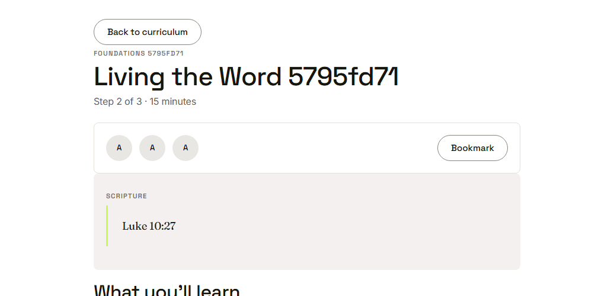
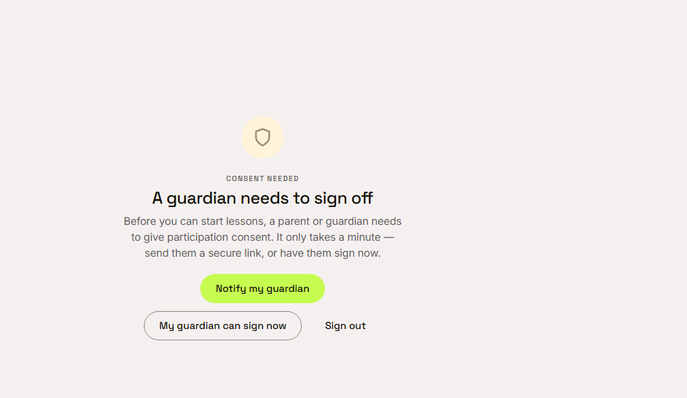
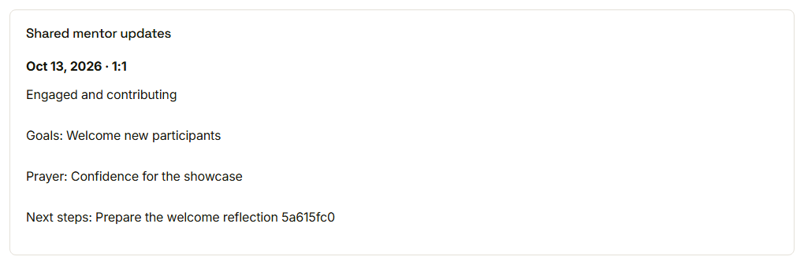

Waypoint · Video 076
Safeguards for young people
Consent, privacy, media and roles
A lesson, with consent on record

Participation consent is on record
Held until a guardian signs

Checked again on the next protected action
Only shared check-ins reach guardians

Private check-ins never appear
Roles do not open every door
- A role gives access to what the role needs
- Creating an account does not open youth records
- Each role sees only its own scope
Things to remember
- Consent is checked on every protected action
- Private check-in notes never reach guardians
- Media needs the right permission on record
- A role opens only what that role needs